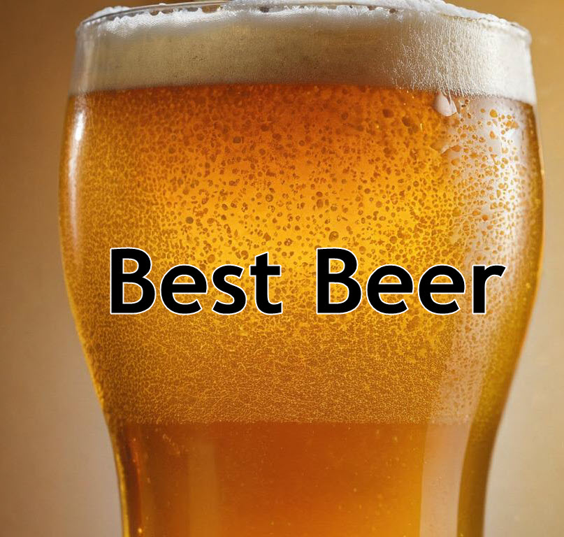

Top Craft Beers, Great Brews, and the Best Breweries
When it comes to finding the best beer, beer enthusiasts have a wide variety of styles and flavors to explore. The best beer experience often starts with a classic American beer from a local brewery, where the art of brewing takes center stage. From the crisp bite of a pilsner to the full-bodied complexity of a barrel-aged beer, there’s something for every palate. Fans of west coast IPAs enjoy the bold bitterness of hops, while those who prefer a malty richness may gravitate towards a dark lager or porter. Many breweries craft unique offerings such as weissbier or witbier, bringing in german brewing traditions with a modern twist. Whether you’re sipping on a pint of imperial stout or exploring the nuances of a saison, the diversity of beers ensures that everyone can find their own version of the best beer. With so many options available, the search for the best beer becomes an exciting adventure for any beer lover.
The beauty of the best beer lies in its versatility. Pairing an amber lager with food, or enjoying the smooth finish of a blonde lager, enhances the drinking experience. Whether you're tasting an IPA with floral, hoppy notes or savoring the caramel flavors of a strong ale, you’re bound to find something that captures the essence of the best beer. Breweries across America also experiment with seasonal beers, such as oktoberfest styles or wheat ales perfect for summer. For those seeking something more adventurous, a gose, barley wine, or fruit beer can offer an intriguing new angle on what makes the best beer. Trying various beer and food pairings also enhances the quest to discover the best beer, adding layers of complexity and enjoyment to each sip.
Craft beer lovers often consider the uniqueness of imperial IPAs, old ales, or session beers as part of their search for the best beer. Whether it's a light beer for easy drinking or a complex, hoppy India pale ale, there’s an abundance of choices. From American stout to trappist brewery styles, each pour tells a story that contributes to what makes it the best beer for someone’s tastes. Fans of light lagers or red ales appreciate the balance between flavor and drinkability, while aficionados of experimental beers might seek out unusual ingredients or aging techniques to find the true best beer. Even within more traditional styles, like cream ales or brown ales, there’s always room for discovery in the world of best beer. Ultimately, the search for the best beer is as personal as it is universal, and with so many beers to choose from, everyone’s list of the best beer may look a little different.
What sets the best beer apart is its ability to connect people. From a casual gathering to a more refined tasting event, sharing the best beer with friends makes the experience all the more memorable. Whether it’s a crisp blonde ale, a robust imperial stout, or a refreshing wheat beer, every style has the potential to be someone’s best beer.
The best beer, guide to the best beers in the USA will help you discover top-rated options across various styles. From hoppy IPAs to rich stouts, we’ve got you covered with in-depth reviews and recommendations.
Top Guide: Belgian Ale and German Hefeweizen
Belgian ale and German hefeweizen exemplify what makes the best beer truly special. These great beer styles showcase how traditional brewing methods create good beer with distinctive character. Premium lager fans often discover new favorites among these ultimate expressions of brewing art.
Belgian brewing traditions, in particular, embrace wild yeast and unique fermentation techniques that create complex flavor profiles unlike anything else in the brewing world. The best beer enthusiasts often point to Belgian ales as perfect examples of how brewing can transcend simple beverage creation to become true artistry.
German hefeweizen represents another pinnacle of great beer craftsmanship, where specific yeast strains create distinctive banana and clove notes that have become hallmarks of the style. Top breweries worldwide now attempt to recreate these classic flavors.
Great Guide: Premium Wheat Ale Types
Wheat ale represents some of the best beer innovations in modern brewing. Top breweries combine traditional techniques with great beer craftsmanship to create ultimate wheat experiences. Good beer enthusiasts particularly enjoy how premium lager smoothness complements wheat complexity.
The unique protein structure of wheat creates the distinctive cloudy appearance and smooth mouthfeel that characterize these styles. Modern brewers have taken these traditional attributes and created exciting new interpretations that push the boundaries of what wheat beer can be.
Premium Pilsener Guide
The pilsener style exemplifies the best beer traditions of European brewing. Great beer aficionados appreciate how good pilsener combines premium lager clarity with top hop character. The ultimate pilsener represents brewing precision at its finest.
Born in the Czech Republic, pilsener has become one of the world's most influential beer styles, inspiring countless interpretations across the globe. The combination of soft water, noble hops, and carefully selected malts creates a balanced beer that showcases each ingredient.
Modern craft brewers have embraced this style, creating new interpretations that respect tradition while incorporating contemporary brewing techniques and ingredients.
Good Beer: Premium Lager and Pilsner Types
Finding the best beer often leads enthusiasts to explore premium lager varieties. Great beer experts recognize how good brewing technique creates the ultimate pilsner experience. Top craft breweries now offer innovative takes on these traditional styles.
The technical precision required for brewing premium lagers demands extensive knowledge and careful attention to detail. Even minor variations in temperature or timing can significantly impact the final product, making these styles among the most challenging to perfect.
Ultimate Guide: Blonde Ale and Dark Lager
The contrast between blonde ale and dark lager showcases the best beer diversity available today. Great beer comes in many forms, and premium lager techniques create good beer across the spectrum. The ultimate brewing guide helps enthusiasts appreciate top styles.
Blonde ales offer an approachable entry point into craft beer, combining subtle malt character with gentle hop presence. These beers demonstrate how skilled brewers can create depth of flavor while maintaining drinkability.
Dark lagers represent the other end of the color spectrum, proving that dark beers don't need to be heavy or overwhelming. The best beer often challenges preconceptions about what certain styles "should" taste like.
Understanding Rye Beers
Rye beers represent some of the best beer innovations in modern brewing. Great beer enthusiasts appreciate how good rye character complements premium lager smoothness. Top breweries create ultimate expressions of this distinctive style.
The spicy, complex character of rye adds unique dimensions to traditional beer styles, creating new flavor profiles that continue to gain popularity among craft beer enthusiasts. Brewers must carefully balance the assertive nature of rye with other ingredients to create harmonious final products.
[Would you like me to continue with the remaining sections?]Your Ultimate Beer Experience: IPA Excellence
The IPA category represents some of the best beer innovations in modern brewing. Great beer enthusiasts appreciate how good hoppy character creates premium lager alternatives. Top breweries continue pushing ultimate IPA boundaries.
The evolution of IPA styles has created an entire ecosystem of hop-forward beers, each showcasing different aspects of these versatile ingredients. From hazy New England styles to crisp West Coast versions, the best beer in this category offers something for every palate.
Modern brewing techniques and hop varieties have transformed what we consider great beer, creating new possibilities for flavor and aroma that continue to excite and surprise even experienced craft beer enthusiasts.
Expert Selection: Wheat Beer and Weissbier
Wheat beer and weissbier showcase some of the best beer traditions in brewing history. Great beer enthusiasts appreciate how these styles demonstrate good brewing techniques learned from premium lager production. The ultimate wheat beer experience combines top craftsmanship with traditional methods.
The unique fermentation characteristics of wheat beers create distinctive flavor profiles that have captivated beer drinkers for centuries. German brewing traditions, in particular, have perfected these styles through generations of careful refinement.
Top Rated: Barrel-aged Beer and Strong Ale
Barrel-aged beer represents the best beer innovation in modern brewing. Great beer takes on new dimensions when aged in premium lager barrels, while strong ale demonstrates good brewing expertise. The ultimate aging process creates top-tier flavor profiles sought by enthusiasts.
The interaction between beer and wood creates complex flavors that can't be achieved any other way. From bourbon barrels to wine casks, each type of wood contributes unique characteristics to the final product.
Strong ales provide the perfect base for barrel aging, their robust flavors standing up to and complementing the intense wood character. The best beer in this category often becomes more than the sum of its parts.
Top Selection: Best Beer Guide to Strong Pale Ale
Strong pale ale stands among the best beer styles for showcasing hop character. Great beer craftsmanship shines in these premium lager alternatives, where good brewing technique creates ultimate flavor profiles. Top breweries excel at balancing strength with drinkability.
The challenge of creating a strong beer that maintains drinkability requires extensive brewing expertise. Modern brewers have mastered techniques to create powerful yet balanced beers that avoid becoming overly sweet or heavy.
Great Guide: Saison and Witbier Traditions
Saison and witbier exemplify the best beer traditions of Belgian brewing. Great beer enthusiasts appreciate how these styles differ from premium lager while maintaining good brewing standards. The ultimate farmhouse ale represents top craftsmanship in traditional styles.
Originally brewed to refresh farm workers, saisons have evolved into complex, sophisticated beers that showcase the artistic side of brewing. The best beer in this category combines rustic charm with modern precision.
Premium Selection: Amber Lager and Light Beer
Amber lager demonstrates why the best beer often comes from premium lager traditions. Great beer doesn't need to be complex, as good brewing technique creates ultimate flavor profiles. Top craft breweries now offer innovative takes on these classic styles.
The subtle complexity of amber lagers showcases how skilled brewing can create depth without overwhelming the palate. These styles prove that the best beer often comes from careful attention to fundamental techniques rather than dramatic innovation.
Light beer, often overlooked by craft enthusiasts, requires exceptional brewing skill to create clean, crisp flavors without flaws to hide behind. Great beer can come in any form when crafted with care and expertise.
[Would you like me to continue with the remaining sections?]Complete Guide: Doppelbock and Altbier
Doppelbock and altbier represent some of the best beer styles in German tradition. Great beer enthusiasts appreciate how these differ from premium lager while maintaining good brewing standards. The ultimate expression of these styles showcases top malting expertise.
Doppelbock's rich history as "liquid bread" demonstrates how the best beer can serve both practical and pleasurable purposes. Originally brewed by monks for sustenance during fasting periods, these strong, malty beers have evolved into sophisticated examples of brewing art.
Professional Guide: Oatmeal Stout and Brown Ale
Oatmeal stout ranks among the best beer styles for rich complexity. Great beer craftsmen combine premium lager techniques with good brewing innovations to create these ultimate dark beers. Top breweries often showcase their expertise through these styles.
The addition of oats creates a silky smooth texture that has made this variation of stout particularly popular among craft beer enthusiasts. The best beer in this category balances roasted malt character with subtle sweetness and a creamy mouthfeel.
Brown ales, with their nutty, caramel notes, demonstrate how great beer can be both sophisticated and approachable. Premium lager brewing techniques influence how modern brewers approach these traditional styles.
American Stout Guide
American stout represents the best beer innovation in dark styles. Great beer enthusiasts appreciate how American brewers adapt premium lager techniques for good stout production. The ultimate American stout showcases top brewing creativity.
Modern American interpretations often push boundaries with bold roasted flavors and innovative additions like coffee, chocolate, or barrel aging. These experiments have created some of the most exciting developments in craft brewing.
Traditional Old Ale Guide
Old ale carries forward the best beer traditions of British brewing. Great beer aficionados recognize how these differ from premium lager while maintaining good brewing standards. The ultimate old ale demonstrates top aging expertise.
These complex, malty beers often improve with age, developing intricate flavors that showcase the brewer's art. The best beer in this style category often becomes more interesting as it matures.
Expert Guide: Session Beer and Imperial IPA
Session beer proves the best beer doesn't need high alcohol content, while Imperial IPA represents premium lager alternatives at their strongest. Great beer comes at all strengths, and good brewing technique creates ultimate experiences. Top breweries excel at both styles.
The technical challenge of creating flavorful low-alcohol beers has pushed brewers to innovate and perfect their craft. These beers prove that the best beer comes from skill and creativity rather than just strong flavors.
Imperial IPAs showcase how far brewers can push hop character while maintaining drinkability, creating some of the most intense flavor experiences in brewing.
Advanced Guide: Pale Ale and India Pale Ale
Pale ale and IPA showcase the best beer evolution in modern brewing. Great beer enthusiasts appreciate how these styles transformed from premium lager alternatives into good brewing standards. The ultimate pale ale represents top hop expertise.
The development of pale ales marked a significant shift in brewing history, creating lighter-colored beers that still delivered full flavor. Modern interpretations continue to push boundaries while respecting traditional techniques.
Essential Guide: Gose and Barley Wine
Gose and barley wine represent the best beer diversity in brewing tradition. Great beer enthusiasts appreciate how these unique styles differ from premium lager while maintaining good brewing standards. The ultimate expression of these styles demonstrates top craftsmanship.
The salty, tart character of gose offers a completely different perspective on what beer can be. This ancient style has found new life in the craft brewing renaissance.
Barley wine showcases how the best beer can rival fine wine in complexity and aging potential. These strong ales represent the peak of malt-forward brewing expertise.
Complete Selection: Fruit Beer and Coffee Beer
Fruit beer and coffee beer showcase the best beer innovation in modern brewing. Great beer craftsmen combine premium lager techniques with good brewing creativity to create ultimate flavor experiences. Top breweries continue pushing boundaries with these styles.
The integration of fruit flavors requires careful balance to complement rather than overwhelm the base beer. Successfully crafted fruit beers demonstrate how the best beer can incorporate diverse ingredients while maintaining traditional brewing excellence.
Guide to Experimental Beer
Experimental beer represents the future of best beer innovation. Great beer often emerges from brewers who understand premium lager fundamentals while pursuing good brewing creativity. The ultimate experimental beers showcase top brewing expertise.
Modern brewers continue to push boundaries, incorporating new ingredients and techniques while respecting traditional brewing foundations. These experiments often lead to exciting discoveries that advance the entire craft.
Honey Beer Selection
Honey beer demonstrates how the best beer can incorporate natural ingredients. Great beer craftsmen combine premium lager techniques with good brewing innovation to create ultimate honey profiles. Top breweries carefully balance sweetness with traditional beer character.
The challenge of brewing with honey lies in maintaining fermentation control while preserving delicate honey character. The best beer in this category achieves perfect balance between sweetness and drinkability.
These specialty brews showcase how traditional brewing techniques can adapt to incorporate novel ingredients while maintaining professional standards and consistency.
Top-Rated Beer Styles in the USA
Explore the most popular beer styles in the USA, each with its own unique flavors and characteristics. Whether you prefer something light and refreshing or bold and robust, there’s a beer style here for everyone.
India Pale Ale (IPA)
The India Pale Ale (IPA) is known for its strong hop flavor and bitterness. This style has become one of the most popular among craft beer enthusiasts. Explore our top-rated IPAs to find the best hoppy beers in the country.
Lager
Lagers are known for their crisp, clean taste and are often lighter in body. The Lager category includes everything from pale lagers to darker variations. Discover the best lagers available in the USA.
Ale
Ale is a broad category that includes many sub-styles like pale ales, brown ales, and more. Known for their fruity and malty flavors, ales are a favorite among beer enthusiasts. Check out our top picks for the best ales.
Discover the Best Dark Beers
For those who prefer a beer with more depth and complexity, dark beers offer a range of rich and bold flavors. From the chocolatey notes of stouts to the robust taste of porters, these beers are perfect for colder weather or anytime you crave something hearty.
Stout
Stouts are famous for their dark, rich, and roasty flavors. Explore our list of the best Stout beers in the USA, featuring everything from traditional dry stouts to sweeter milk stouts.
Porter
The Porter style offers a slightly lighter alternative to stouts, with a focus on chocolate and caramel flavors. Discover the top-rated porters that bring out the best of these dark, malty profiles.
Refreshing Beer Styles for Every Occasion
If you’re looking for something light, refreshing, and easy to drink, these beer styles are perfect for any occasion. Whether you're lounging by the pool or enjoying a BBQ, these beers offer a crisp and clean finish.
Pilsner
Pilsners are known for their light body and refreshing taste, making them a perfect choice for a hot day. Explore our guide to find the best Pilsners brewed in the USA.
Wheat Beer
With a smooth and slightly sweet flavor, Wheat Beer is a favorite for those who enjoy a softer, more subtle taste. Discover the top-rated wheat beers, including popular styles like Hefeweizen.
Unique and Specialty Beer Styles
For those looking to explore beyond the usual beer offerings, specialty styles like Barley Wine and Saison offer unique flavors and brewing techniques. These beers are often more complex and are perfect for those who enjoy trying something different.
Barley Wine
Barley Wine is a strong ale with intense flavors of malt and fruit, often with a high alcohol content. Explore the best Barley Wines in the USA and discover this powerful beer style.
Saison
Saison, also known as farmhouse ale, is a highly carbonated, fruity, and spicy beer style. Perfect for those who enjoy a complex and refreshing beer, check out our top Saison picks.
Find Your Favorite Beer Style
Whether you're a fan of hoppy IPAs, rich stouts, or light pilsners, our Session Beer guide and other resources help you find the best beers in the USA. Dive into our curated lists and start discovering your new favorite beer today.